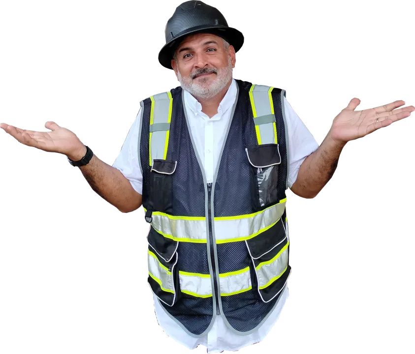
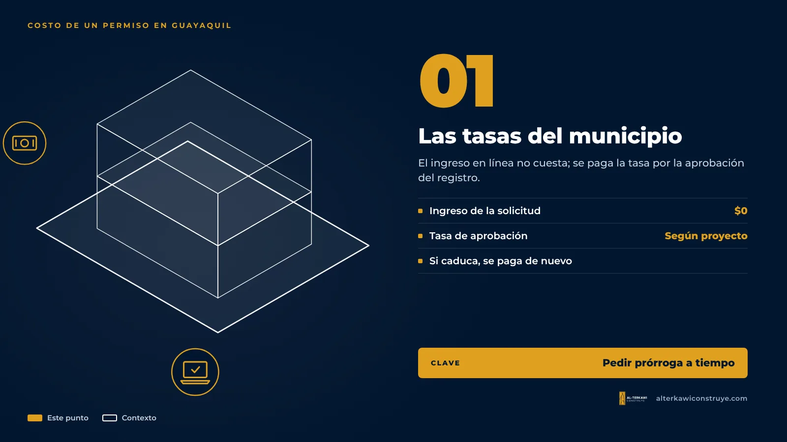
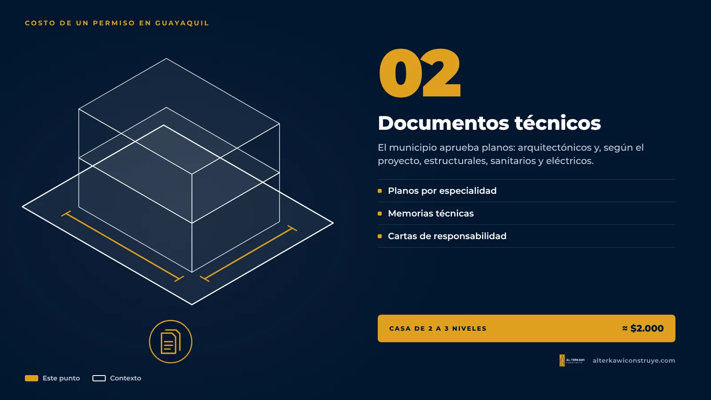
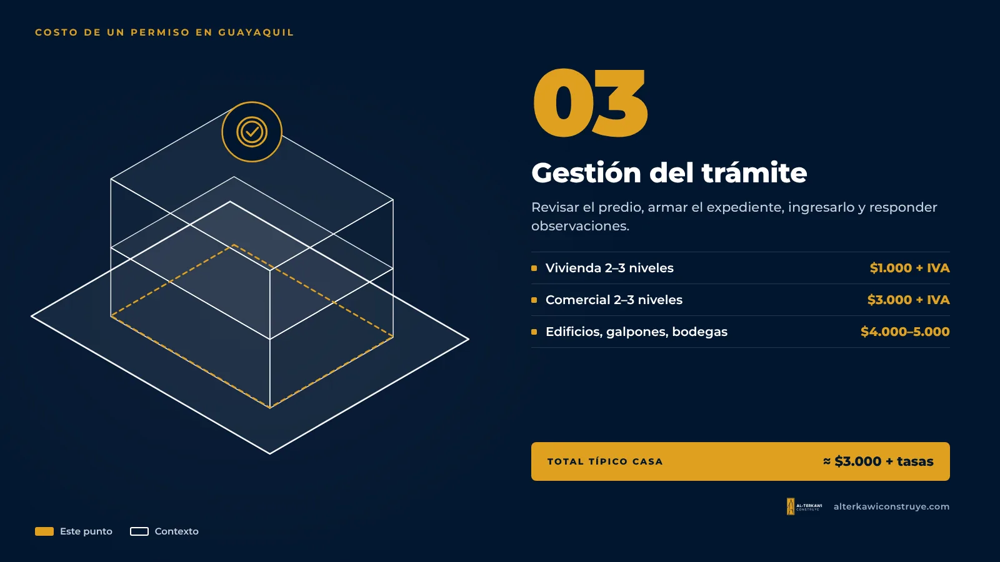

¿Cuánto cuesta un permiso de construcción en Guayaquil en 2026?

La respuesta corta: para una casa de 2 o 3 pisos, el permiso completo suele costar alrededor de $3.000 más tasas, si partes de cero. Pero ese número se arma con tres partes distintas, y conocerlas te evita pagar de más.

Los tres costos de un permiso de construcción en Guayaquil
1. Las tasas del municipio

En Guayaquil el permiso se tramita como registro de construcción, en línea, desde la cuenta municipal, y el ingreso de la solicitud no tiene costo. Si todavía no tienes tu cuenta, aquí te explico cómo crearla:
▶ Cómo crear usuario y contraseña en el Municipio de Guayaquil — canal Arquitecto Gratis
Lo que sí se paga es la tasa por la aprobación del registro, que depende del proyecto. Ojo: si el registro caduca antes de terminar la obra, toca sacar uno nuevo y volver a pagar esa tasa; la prórroga hay que pedirla mientras el registro sigue vigente.
2. Los documentos técnicos

El municipio no aprueba ideas: aprueba planos. Para una vivienda se necesitan planos arquitectónicos y, según el proyecto, estructurales, sanitarios y eléctricos, con sus memorias técnicas y las cartas de responsabilidad de los ingenieros. En una casa de 2 a 3 niveles esto suele rondar los $2.000 si no tienes nada hecho.
3. La gestión del trámite

Es el trabajo de revisar el predio, armar el expediente, ingresarlo, responder observaciones y hacer seguimiento hasta la aprobación. Puedes hacerlo tú, pero cada observación del municipio es tiempo perdido.
Nuestros precios de gestión (2026)
| Tipo de proyecto | Honorarios de gestión |
|---|---|
| Vivienda de 2 a 3 niveles | $1.000 + IVA |
| Comercial de 2 a 3 niveles | $3.000 + IVA |
| Edificios de más de 3 niveles, galpones y bodegas | $4.000 – $5.000 + IVA |
| Remodelación de locales comerciales | Se cotiza según requisitos |
No incluyen tasas municipales ni de Bomberos, ni los documentos técnicos.
Curso gratis de permisos municipales
En mi canal explico, video por video, los trámites municipales para construir en Guayaquil.
▶ Lista: Curso de permisos municipales para la construcción en Guayaquil · 36 videos — ver en YouTube
Los errores que encarecen un permiso
- Diseñar sin revisar las normas del predio. Retiros, altura o coeficiente de ocupación mal calculados obligan a rehacer planos.
- Ingresar el expediente incompleto. Cada observación es otra vuelta de revisión.
- Dejar caducar el registro. Si vence, toca un registro nuevo y una tasa nueva.
- Construir primero y regularizar después. Sale más caro y complica vender o hipotecar.
¿Y si ya construiste?
Entonces no necesitas un permiso nuevo sino una regularización. Te lo explicamos en nuestra guía de regularización de construcciones en Guayaquil.

¿Quieres saber cuánto te costaría a ti?
Mándanos la ubicación de tu terreno y lo que quieres construir. Te respondemos con lo que necesitas y el precio cerrado.

Arquitecto en Guayaquil, Samborondón y Daule. Más de 360 mil personas siguen sus videos de obra como "Arquitecto Gratis".